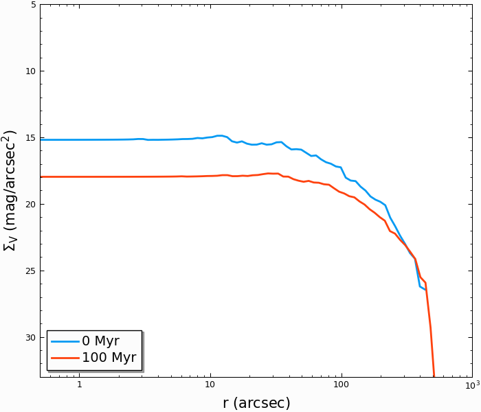

Analyzing CMC Output
Here we list all of the output files that are generated in a typical CMC run, and offer some suggestsions on how to analyze them. Generally, the output comes in one of two types: log files, where individual events (e.g. stellar collisions, mergers, fewbody interactions) are logged whenenver they happen or when specific quantities are recorded every timestep (e.g. the number of black holes, the core radius, the lagrange radii), and snapshots, where the state of every star and binary in the cluster is recorded. These are saved in plain text dat files and hdf5 files, respectively.
Most of the log files are in plain text (.dat) with easily readable columns that can be loaded in python with either loadtxt or the appropriate pandas
commands. However, a handful of the event log files, such as for binary interactions (binint.log), collisions (collision.log), and disruptions by stellar evolution
(semergedistrupt.log), are somewhat more difficult to parse. We have provided a python package to make parsing these easier; it is located in the
CMC-COSMIC/tools directory of the main CMC folder (the cmc_parser.py file).
The log files can be imported using (specifying only the prefix that you provided for the output when running CMC):
In [1]: import cmc_parser as cp
In [2]: units,binints,semergers,collisions = cp.load_ineraction_files('source/example_output/output')
We will discuss each of these below.
The HDF5 snapshots are designed to be importable as Pandas tables and are described below. These snapshots can also be converted into various observational
quantities, such as surface brightness profiles, velocity dispersion profiles, and more, using the cmctoolkit package
(Rui et al. 2021). We include the python code from the main package in the
CMC-COSMIC/tools directory, but please see here for complete instructions and useage.
Note
Here we are using the output from the Realistic Initial Conditions example, running it for 15 Myr (though note that the default ini file runs it for 13.8 Gyr) and having it print a window snapshot every 10 Myr. On 28 cores of the Vera machine, this takes about 10 minutes.
Code Units
CMC uses the standard N-body units (Hénon 1971a) in all numerical calculations: the gravitational constant \(G=1\), the initial total mass \(M=1\), and the initial total energy \(E_0=-1/4\). The conversion from code units to physical units for time is done by calculating the initial half-mass relaxation time in years. The file <output>.conv.sh contains all conversion factors used to convert from code to physical
units. For example, to convert from code units of time to Myr, multiply by the factor timeunitsmyr, and so on.
Unless otherwise noted, all values below are in code units.
This file can be parsed using the above command, or using a stand-alone command for only the conversion dictionary:
In [3]: import cmc_parser as cp
In [4]: conv_file = cp.conversion_file('source/example_output/output.conv.sh')
In [5]: print(conv_file.mass_msun)
63500.5
In [6]: print(conv_file.__dict__)
{'mass_cgs': 1.26303e+38, 'mass_msun': 63500.5, 'mass_cgs_mstar': 1.26303e+33, 'mass_msun_mstar': 0.635005, 'length_cgs': 2.46856e+19, 'length_parsec': 8.0, 'time_cgs': 6.11611e+17, 'time_myr': 19381.2, 'time_cgs_nb': 42248600000000.0, 'time_myr_nb': 1.33881}
Log Files
Listed below are the output files of CMC with the 0-indexed variables tabulated with brief descriptions.
initial.dyn.dat
The initial.dyn.dat file contains various theoretical quantities pertaining to the dynamical evolution of the cluster, such as theoretical core radius, total mass, central density, central velocity dispersion, etc. This file may be used to create, for example, plots of core radii or half-mass radii versus time for a given simulation. Be warned that these theoretical quantities are not necessarily the same as the way observers would define these quantities. However, these quantities are all useful for establishing a general idea of how the cluster evolves.
0 |
|
Time |
1 |
|
Time step size |
2 |
|
Time step count |
3 |
|
Total number of objects (single + binary) |
4 |
|
Total mass (in units of initial mass) |
5 |
|
Measures how far away the cluster is from virial equilibrium (-2.0*Etotal.K/Etotal.P) |
6 |
|
Total number of stars within the core radius |
7 |
|
Theoretical, mass-density-weighted core radius from Eq. II.4 of Casertano & Hut (1985) |
8 |
|
Maximum clustercentric radial position of any star in the cluster |
9 |
|
Total energy |
10 |
|
Total kinetic energy |
11 |
|
Total potential energy |
12 |
|
Total internal energy of single stars |
13 |
|
Total internal energy of binary stars |
14 |
|
Central BH mass (i.e., when there is a central IMBH) |
15 |
|
Total energy of the escaped single stars |
16 |
|
Total energy of the escaped binary stars |
17 |
|
Total internal energy in the escaped stars |
18 |
|
Energy lost due to the Stodółkiewicz (1982) potential correction step |
19 |
|
|
20 |
|
Half-mass radius |
21 |
|
Central density (mass-density-weighted density) from Eq. II.5 of Casertano & Hut (1985) |
22 |
|
Core radius from Spitzer (1987), \(\sqrt{3 \sigma_0^2}{4 \pi \rho_0}\) |
23 |
|
RMS density-weighted velocity dispersion at the cluster center |
24 |
|
Theoretical (mass-density-squared)-weighted core radius used in NBODY6, originating in Eq. 5 of McMillan, Hut & Makino (1990) |
25 |
|
Total mass loss from the cluster per time step due to stellar evolution [\(M_{\odot}\)] |
26 |
|
Mass loss from rejuvenation per time step [\(M_{\odot}\)] |
27 |
|
Number of stars within the core radius |
initial.binint.log
Over the course of the evolution of the cluster, single stars and binaries will frequently undergo three- and four-body dynamical encounters, integrated directly in CMC using the Fewbody package (Fregeau et al. 2004, Fregeau et al. 2007). The file initial.binint.log records key input and output parameters (e.g., component masses, IDS, stellar types, semi-major axes, etc.) each time fewbody is called.
Information for each encounter is printed between two lines of asterisks. Below is an example output:
********************************************************************************
type=BS t=5.85010072e-06
params: b=1.46611 v=0.379587
input: type=single m=0.0284732 R=0.215538 Eint=0 id=170307 ktype=0
input: type=binary m0=0.211113 m1=0.148022 R0=0.22897 R1=0.170412 Eint1=0 Eint2=0 id0=33128 id1=1255329 a=0.0908923 e=0.0641548 ktype1=0 ktype2=0
status: DE/E=-1.79889e-08 DE=1.71461e-10 DL/L=2.54957e-08 DL=8.18406e-10 DE_GW/E=-0 DE_GW=0 v_esc_cluster[km/s]=77.9847 tcpu=0.01
outcome: nstar=3 nobj=2: 0 [1 2] (single-binary)
output: type=single m=0.0284732 R=0.215538 Eint=0 id=170307 ktype=0
output: type=binary m0=0.211113 m1=0.148022 R0=0.22897 R1=0.170412 Eint1=0 Eint2=0 id0=33128 id1=1255329 a=0.09094 e=0.123848 ktype1=0 ktype2=0
********************************************************************************
Possible outcomes for type=BS:
single-binary 0 [1 2]
binary-single [2 0] 1
single-single-single 0 1 2
single-single 0:1 2
binary [0:1 2]
single 0:1:2
Possible outcomes for type=BB:
binary [0 1:2:3]
single-binary 0:1 [2 3]
binary-single [0:1 3] 2
binary-binary [0 1] [2 3]
single-triple 0 [[1 3] 2]
triple-single [[0 1] 3] 2
single-single-binary 3 1 [2 0]
binary-single-single [0 1] 3 2
single-binary-single 0 [1 3] 2
0:1 denotes that bodies 0 and 1 have collided/merged, and [0 1] indicates that bodies 0 and 1 have formed a binary. The same is true for any pairs from 0 to 3.
While the binint file is easy to read, it can be difficult to parse. Using the load_interaction_files command from above provides the
binints object, a python list of dictionaries of every encounter:
In [7]: print(binints[0].__dict__)
{'in_singles': [<cmc_parser.star object at 0x748b150dc5b0>], 'in_binaries': [<cmc_parser.binary object at 0x748b150dc610>], 'out_singles': [<cmc_parser.star object at 0x748b150dc730>], 'out_binaries': [<cmc_parser.binary object at 0x748b150dc790>], 'out_triple': [], 'collision': -1, 'type': 'binary-single', 'time': 9.03303568e-06, 'b': 12.5439, 'v': 0.0233153, 'vesc_KMS': 9.06956, 'de_gw': 0.0}
# input binaries is a list that can be printed with:
In [8]: print(binints[0].in_binaries[0].__dict__)
{'star1': <cmc_parser.star object at 0x748b150dc640>, 'star2': <cmc_parser.star object at 0x748b150dc6d0>, 'a_AU': 497.48, 'e': 0.0765938}
# and the individual stars of that binary can be accessed with:
In [9]: print(binints[0].in_binaries[0].star1.__dict__)
{'m_MSUN': 89.5502, 'r_RSUN': 10.8526, 'id': 31699, 'ktype': 1}
# so if I wanted, for instance, the radius of star two of the input binary in the first encounter:
In [10]: print(binints[0].in_binaries[0].star2.r_RSUN)
8.41487
# If I wanted to know the escape speed of the cluster where this encouner occured, I can access that with
In [11]: print(binints[0].vesc_KMS)
9.06956
initial.bh.dat
This file contains the number of BHs (as well as BH binaries, etc.) at each time step. This is useful to plot, for example, the number of retained BHs versus time. For BH mergers, you want to look in initial.bhmerger.dat, which records all BH-BH mergers that occur within the cluster during its evolution (ejected mergers must be analyzed separately by computing the inspiral times of all BH-BH binaries appearing in the initial.esc.dat file).
0 |
|
Time step count |
1 |
|
Time |
2 |
|
Total number of BHs ( |
3 |
|
Number of single BHs |
4 |
|
Number of binary BHs ( |
5 |
|
Number of BH-BH binaries |
6 |
|
Number of BH-nonBH binaries |
7 |
|
Number of BH-NS binaries |
8 |
|
Number of BH-WD binaries |
9 |
|
Number of stars including MS stars and giants |
10 |
|
Number of BH-MS binaries |
11 |
|
Number of BH-giant binaries |
12 |
|
Number of BH-containing binaries / number of BH-containing systems (singles or binaries): |
initial.bh.esc.dat
This file contains the number of ejected BHs at each time step. It includes the same columns in the initial.bh.dat file.
initial.bhmerger.dat
List of all BH-BH mergers that occur in the cluster (note this does not include BH-BH binaries that may be ejected from the cluster and merge later). There are four categories of mergers that occur inside the cluster:
isolat-binary - merger that occurs in a binary, but not due to GW capture
binary-single - merger that occurs due to GW capture during a binary-single encounter
binary-binary - merger that occurs due to GW capture during a binary-binary encounter
single-single - merger that occurs due to GW capture between two isolated BHs
0 |
|
Time merger occurs |
1 |
|
What kind of merger was this |
2 |
|
Radius in cluster where merger occured |
3 |
|
ID of primary |
4 |
|
ID of secondary |
5 |
|
Mass of primary [\(M_{\odot}\)] |
6 |
|
Mass of secondary [\(M_{\odot}\)] |
7 |
|
Spin of primary |
8 |
|
Spin of secondary |
9 |
|
ID of merger remnant |
10 |
|
Mass of merger remnant [\(M_{\odot}\)] |
11 |
|
Spin of merger remnant |
12 |
|
Kick merger remnant recieves [\({\rm km\,s}^{-1}\)] |
13 |
|
Escape speed of cluster where merger occurs [\({\rm km\,s}^{-1}\)] |
14 |
|
Last semi-major axis recorded for binary (see note) [AU] |
15 |
|
Last eccentricity recorded for binary |
16 |
|
(Newtonian) semi-major axis when the BHs were 50M apart; only for binary-single or binary-binary [AU] |
17 |
|
(Newtonian) eccentricity when BHs were 50M apart |
18 |
|
Same, but 100M apart [AU] |
19 |
|
“ |
20 |
|
“ |
21 |
|
“ |
Danger
The
a_finalande_finalparameters change depending on the type of encounter. For binary-single and binary-binary GW captures, these record the (Newtonian) semi-major axis and eccentricity at 10M (when we consider the BHs to have mergred. However, this is an unreliable quantity, since the orbit is decidedly non-Newtonian at that point. If you want eccentricities, usea_100Mande_100M, or preferably the outermost value above).For single-single GW captures,
a_finalande_finalare the semi-major axis and eccentricity that the GW capture formed at. For isolat-binary mergers, it’s the last semi-major axis and eccentricity that were recorded in the cluster.
initial.collision.log
This file lists stellar types and properties for all stellar collisions occurring in the simulation. See Sections 6 and 7 of Kremer et al. (2019) for further detail.
0 |
|
Collision time |
1 |
|
Interaction type e.g., single-binary, binary-binary, etc. |
2 |
|
ID_merger(mass of merged body) |
3 |
|
ID_1 (mass of collided body_1) |
4 |
|
ID_2 (mass of the collided body_2) |
5 |
|
Distance from the center of cluster |
6 |
|
Merger stellar type |
7 |
|
Stellar type of body_1 |
8 |
|
Stellar type of body_2 |
9 |
|
Impact parameter at infinity [\(R_{\odot}\)] |
10 |
|
Relative velocity of two objects at infinity [\({\rm km\,s}^{-1}\)] |
11 |
|
Radius of body_1 |
12 |
|
Radius of body_2 |
13 |
|
Pericenter distance at collision |
14 |
|
Collison multiplyer e.g., sticky sphere ( |
The single-single, binary-single, etc indicate whether the collision occurred during a binary encounter or not. When there are three stars listed for the collision it means that all three stars collided during the encounter. This is rare, but it does happen occasionally. Typically, one will see something like:
t=0.00266079 binary-single idm=717258(mm=1.0954) id1=286760(m1=0.669391):id2=415309 (m2=0.426012) (r=0.370419) typem=1 type1=0 type2=0
In this case the colliding stars are m1=0.66 and m2=0.42. The information about the third star in this binary–single encounter is not stored in the collision.log file. The only way to get information about the third star is to find this binary-single encounter in the initial.binint.log file (can be identified easily using the encounter time (here t=0.00266) and also cross-checking the id numbers for the two stars listed in the collision file).
Similarly to the binint file, the collision file can be processed using the load_interaction_file command.
In [12]: print(collisions[0].__dict__)
---------------------------------------------------------------------------
IndexError Traceback (most recent call last)
Cell In[12], line 1
----> 1 print(collisions[0].__dict__)
IndexError: list index out of range
initial.semergedisrupt.log
This file lists all stellar mergers that occur through binary evolution in each simulation.
0 |
|
Time |
1 |
|
Interaction type e.g., disrupted1, disrupted2, disrupted both |
2 |
|
ID_remnant(mass of the remnant) |
3 |
|
ID_1 (mass of body_1) |
4 |
|
ID_2 (mass of body_2) |
5 |
|
Distance from the center of cluster |
6 |
|
Stellar type of merger |
7 |
|
Stellar type of body_1 |
8 |
|
Stellar type of body_2 |
The semergedisrupt file can also be processed using the load_interaction_file command
In [13]: print(semergers[0].__dict__)
{'time': 0.000364846, 'radius': 0.293465, 'type': 'disruptboth', 'out_id': -1, 'out_mass': -1, 'in_ids': (22408, 100032), 'in_masses': (7.12852, 22.3405), 'out_type': -1, 'in_types': (1, 1)}
initial.esc.dat
As the result of dynamical encounters (and other mechanisms such as cluster tidal truncation) single stars and binaries often become unbound from the cluster potential and are ejected from the cluster. When this happens, the ejection is recorded in initial.esc.dat. Such escapers are often still important to consider: for example, when studying stellar streams or binary phenomena that still occur after ejection. For instance, if a BH-BH binary is ejected from the cluster with sufficiently small orbital separation it may merge within a Hubble time and be a possible LIGO source. To determine the number of such mergers, calculate the inspiral times for all BH-BH binaries that appear in initial.esc.dat.
As of September 2026, initial.esc.dat now stores all necessary information to restart stellar evolution of both binary and single ejecta in post-processing using the COSMIC stellar evolution code. Previously, this was only possible for binaries since relevant information for singles was missing from initial.esc.dat.
Parameters ending with a 0 (e.g., id0) contain information about the stellar body if it’s a single, or about the primary body if the system is a binary. The corresponding columns for the secondary bodies of binaries end with a 1 (e.g., id1) and are filled with values of -100 for singles. For brevity, these columns for binary secondaries are not listed in the table below, but each one’s position in the file immediately follows the corresponding column for binary primaries and singles, reflected in the missing column indices in the table. In addition to columns ending in a 1, a few additional columns are meaningful for binaries only and are filled with values of -100 for singles. These columns are: a, e, eta, radrol0, and dmdt0.
0 |
|
Timestep count |
1 |
|
Time |
2 |
|
Clustercentric radial position |
3 |
|
Radial velocity, \(v_r\) |
4 |
|
Tangential velocity, \(v_t\) |
5 |
|
Energy of star’s orbit in the cluster, \(E=\frac{v_r^2 + v_t^2}{2} + \phi(r)\). Note this includes the single/binary’s own contribution to \(\phi(r)\)—i.e., \(-G(m_0+m_1)/r\)—but this self-contribution is explicitly excluded in the criterion for escape: |
6 |
|
Angular momentum of system’s orbit in the cluster, \(J = r v_t\) |
7 |
|
Pericenter of star’s orbit in the cluster when it was ejected |
8 |
|
Apocenter of star’s orbit in the cluster |
9 |
|
Tidal radius, \(r_t\) |
10 |
|
Potential at cluster center |
11 |
|
Potential at the tidal radius, \(\phi(r_t)\) |
12 |
|
Critical energy required to escape, excluding the single/binary’s own contribution to \(\phi(r_t)\), i.e., \(-G (m_0 + m_1) / r_t\). By default, \(E_{\rm crit} = \alpha \phi(r_t) + G (m_0 + m_1) / r_t\) where \(\alpha = 1.5 - 3 \left(\frac{\ln\Lambda}{N}\right)^{1/4}\) (Giersz et al. 2008). Here, \(\ln\Lambda = \gamma N\) is the Coulomb logarithm, and CMC’s default \(\gamma=0.01\) is appropriate for realistic stellar initial mass functions (Freitag et al. 2006, Rodriguez et al. 2018). |
13 |
|
ID of binary primary or single |
15 |
|
Stellar type |
17 |
|
Mass, \(m_0\) [\(M_{\odot}\)] |
19 |
|
Binary semi-major axis [AU]; -100 if single |
20 |
|
Binary eccentricity; -100 if single |
21 |
|
Binary hardness, \(\eta = \frac{G(m_0+m_1)}{a \langle m^2 \sigma^2\rangle}\), where the local average over mass \(m\) ( |
22 |
|
Radius [\(R_{\odot}\)] |
24 |
|
Luminosity [\(L_{\odot}\)] |
26 |
|
Core mass [\(M_{\odot}\)] |
28 |
|
Envelope mass [\(M_{\odot}\)] |
30 |
|
Core radius [\(R_{\odot}\)] |
32 |
|
Envelope radius [\(R_{\odot}\)] |
34 |
|
Ratio of binary primary’s radius to its enclosing Roche lobe radius; -100 if single |
36 |
|
Main-sequence timescale [Myr] |
38 |
|
Binary primary star’s mass rate of change [\(M_{\odot}\,{\rm yr}^{-1}\)]; -100 if single |
40 |
|
Total previously accreted mass [\(M_{\odot}\)] |
42 |
|
Time [Myr] spent accreting mass |
44 |
|
Initial mass [\(M_{\odot}\)] |
46 |
|
Spin angular momentum [\(M_{\odot}\,R_{\odot}^2\,{\rm yr}^{-1}\)] |
48 |
|
Magnetic field strength [G] |
50 |
|
COSMIC parameter establishing a time offset for restarting stellar evolution [\(M_{\odot}\)] |
52 |
|
Supernova remnant formation channel (e.g., core collapse, pair instability, etc.) |
54 |
|
BH spin |
initial.morepulsars.dat
This files contains detailed information on all neutron stars for each simulation. For further information on treatment of neutron stars, see Ye et al. (2019).
|
Time count |
|
Total time |
|
Binary flag |
|
ID number |
|
Mass [\(M_{\odot}\)] |
|
Magnetic field [G] |
|
Spin period [sec] |
|
Star type |
|
Semi-major axis[AU] |
|
Eccentricity |
|
Roche ratio (if > 1, mass transfering) |
|
Mass transfer rate |
|
Distance from the cluster center |
|
Radial velocity |
|
Tangential velocity |
|
Mass accreted to star |
|
Time spent accreting mass |
initial.log
Each time step, cluster information is printed between two lines of asterisks. Below is an exemplary output:
******************************************************************************
tcount=1 TotalTime=0.0000000000000000e+00 Dt=0.0000000000000000e+00
Etotal=-0.514537 max_r=0 N_bound=1221415 Rtidal=111.234
Mtotal=1 Etotal.P=-0.499519 Etotal.K=0.249522 VRatio=0.99905
TidalMassLoss=0
core_radius=0.361719 rho_core=7.18029 v_core=0.832785 Trc=994.138 conc_param=0 N_core=135329
trh=0.100838 rh=0.811266 rh_single=0.811936 rh_binary=0.801647
N_b=38407 M_b=0.0752504 E_b=0.26454
******************************************************************************
|
Time count |
|
Total time |
|
Time step |
|
Total energy |
|
Maximum radius of a star |
|
Number of objects bound to the cluster |
|
Tidal radius of the cluster |
|
Total mass of the cluster |
|
Total potential energy of the cluster |
|
Total kinetic energy of the cluster |
|
Virial ratio |
|
Mass lost through the tidal radius |
|
Core radius |
|
Core density |
|
Velocity dispersion in the core |
|
Core relaxation timescale |
|
King concentration parameter |
|
Number of objects within core radius |
|
Half-mass relaxation time |
|
Half-mass radius |
|
Half-mass radius of single objects |
|
Half-mass radius of binaries |
|
Total number of binaries |
|
Total mass of binaries |
|
Total energy of binaries |
Note that this is also printed to stdout every timestep.
initial.tidalcapture.log
This files contains information on tidal capture events for each simulation.
time - tidal capture time
interaction_type - (SS_COLL_GW)
(id1,m1,k1)+(id2,m2,k2)->[(id1,m1,k1)-a,e-(id2,m2,k2)] - (ID, mass and star type of interacting stars) -> [(ID, mass, stary type of the primary) - semi-major axis, eccentricity - (ID, mass, stary type of the secondary)]
initial.triple.dat
List of triples formed dynamically in the cluster as a result of three- and four-body dynamical encounters.
|
Time |
|
Mass of inner object _0 [\(M_{\odot}\)] |
|
Mass of inner object _1 [\(M_{\odot}\)] |
|
Mass of outer object [\(M_{\odot}\)] |
|
Radius of inner object _0 [\(R_{\odot}\)] |
|
Radius of inner object _1 [\(R_{\odot}\)] |
|
Radius of outer object [\(R_{\odot}\)] |
|
Semi-major axis of inner binary [AU] |
|
Semi-major axis of outer binary [AU] |
|
Eccentricity of inner binary |
|
Eccentricity of outer binary |
|
Inner object _0 stellar type |
|
Inner object _1 stellar type |
|
Outer object stellar type |
|
Quadrupole Kozai-Lidov timescale [yr] |
|
Octupole Kozai-Lidov timescale: tlkquad/epsoct [yr] |
|
Octupole parameter |
|
1PN precession timescale [yr] |
|
GR parameter: Tlk_quad/T_GR |
initial.lagrad.dat
This file contains the Lagrange radii enclosing given percentages of the cluster’s total mass. So for example, the 10% Lagrange radius printed in the initial.lagrad.dat file is the radius at a given time that encloses 10% of the mass. The different columns in that file give 0.1%, 5%, 99%, etc. Lagrange radii.
initial.v2_rad_lagrad.dat
List of the sum of radial velocity \(v_{r}\) within Lagrange radii enclosing given percentages of the cluster’s total mass.
initial.v2_tan_lagrad.dat
List of the sum of tangential velocity \(v_{t}\) within Lagrange radii enclosing given percentages of the cluster’s total mass.
initial.nostar_lagrad.dat
List of the number of stars within Lagrange radii enclosing a given percentage of the cluster’s total mass.
initial.rho_lagrad.dat
List of the mean density within Lagrange radii enclosing given percentages of the cluster’s total mass.
initial.avemass_lagrad.dat
List of the average mass \(\langle m \rangle\) within Lagrange radii enclosing given percentages of the cluster’s total mass in units of solar mass [\(M_{\odot}\)].
initial.ke_rad_lagrad.dat
List of the total radial kinetic energy \(T_{r}\) within Lagrange radii enclosing given percentages of the cluster’s total mass in code units.
initial.ke_tan_lagrad.dat
List of the total tangenial kinetic energy \(T_{t}\) within Lagrange radii enclosing given percentages of the cluster’s total mass in code units.
initial.lagrad0-0.1-1.dat
List of the Lagrange radii for object masses in the range 0.1 \(M_{\odot}\) < m < 1 \(M_{\odot}\).
initial.lagrad1-1-10.dat
List of the Lagrange radii for object masses in the range 1 \(M_{\odot}\) < m < 10 \(M_{\odot}\).
initial.lagrad2-10-100.dat
List of the Lagrange radii for object masses in the range 10 \(M_{\odot}\) < m < 100 \(M_{\odot}\).
initial.lagrad3-100-1000.dat
List of the Lagrange radii for object masses in the range 100 \(M_{\odot}\) < m < 10000 \(M_{\odot}\).
initial.lagrad_10_info.dat
This file containts dynamical information of the cluster at the 10% Lagrange radius.
initial.core.dat
Information for the core that contains no remnants.
|
Time |
|
Density of the core |
|
Velocity dispersion of the core |
|
Core radius |
|
Spitzer radius |
|
Average mass within this core radius |
|
|
|
|
|
initial.bin.dat
This file contains information on binaries.
|
Total time |
|
Number of binaries |
|
Mass of binaries |
|
Total energy of binaries |
|
Half-mass radius of single objects |
|
Half-mass radius of binaries |
|
Core density for single objects |
|
Core density for binaries |
|
Number of binary-binary interactions |
|
Number of binary-single interactions |
|
Binary fraction in the core |
|
Binary fraction |
|
|
|
|
|
|
|
|
|
Number of existing bound binaries in the core |
|
Fraction of existing bound binaries in the core |
|
Number of all binaries including the escaped and destroyed ones in the core |
initial.bhformation.dat
This file contains information about newly formed BHs.
|
Time of BH formation |
|
Position in cluster |
|
Whether binary or not at the time of stellar collapse |
|
ID of BH |
|
Mass of progenitor at t=0 |
|
Mass of progenitor before explosion |
|
Mass of BH |
|
Spin of BH |
|
Birth kick magnitude of natal kick [\({\rm km\,s}^{-1}\)] |
|
Array of natal kicks |
initial.3bb.log
This file contains information of three body binaries (triples).
|
Time |
|
Stellar type of object _1 |
|
Stellar type of object _2 |
|
Stellar type of object _3 |
|
ID of object _1 |
|
ID of object _2 |
|
ID of object _3 |
|
Mass of object _1 |
|
Mass of object _2 |
|
Mass of object _3 |
|
Average local mass |
|
Local number density |
|
The local 3D velocity dispersion |
|
Hardness of the inner binary |
|
Binding energy of the inner binary |
|
Eccentricty |
|
Semi-major axis [AU] |
|
Pericenter distance [AU] |
|
Radial distance of the binary |
|
Radial distance of the single object |
|
Radial velocity of binary |
|
Tangential velocity of binary |
|
Radial velocity of single object |
|
Tangential velocity of single object |
|
Potential energy of the binary |
|
Potential energy of the single object |
|
Change of the potential energy |
|
Change of the kinetic energy |
|
Change of the total energy per interaction |
|
Change of the total energy for all 3-body interactions |
|
The number of triples formed |
initial.3bbprobability.log
Average rate and probability of three-body binary formation in the timestep calculated from the innermost 300 triplets of single stars considered for three-body binary formation.
|
Time |
|
Time step |
|
|
|
|
|
Probability of binary formation |
|
initial.lightcollision.log
List of stars that fail to form triples.
|
Time |
|
Variable to store most massive star index |
|
Second most massive star index |
|
Least massive star index |
|
ID number |
|
Mass |
|
Stellar type |
|
Stellar radius |
|
Binding energy |
|
Eccentricity |
|
Semi-major axis [AU] |
|
m1 * m2 * madhoc / (eta * sqr(sigma_local)) [AU] |
Snapshots
Note
See here for how to set the various snapshot parameters in the ini file
There are three different kinds of snapshots that CMC saves:
initial.snapshot.h5 – every star and binary, saved every
SNAPSHOT_DELTACOUNTnumber of code timestepsinitial.window.snapshot.h5 – every star and binary, saved in uniform physical timesteps (set in
SNAPSHOT_WINDOWS)initial.bhsnapshot.h5 – same as initial.shapshot.h5, but just for black holes
As of September 2026, the snapshots have been redesigned to be read strictly using the h5py python package (or equivalent in other coding languages for reading HDF5) rather than the
read_hdf function in pandas, which will no longer work on snapshots from the latest CMC models. This change enables a 100x speedup when reading only a single column of data from a
snapshot, a 4x speedup when reading the entire snaphsot, and a 40% reduction in snapshot storage size (even after having added new data). For convenience, we have updated the Snapshot
class of cmctoolkit (below) to automatically determine which snapshot format is used by an input CMC simulation—including the even older dat.gz format used for the CMC Cluster
Catalog (Kremer et al. 2020), prior to CMC’s public release—and extract a pandas dataframe containing all snapshot data
regardless of snapshot format. However, unlike the newest snapshots, those from prior to September 2026 (formats dat.gz and h5-table in cmctoolkit’s Snapshot class) did not
contain all necessary data to continue stellar evolution of single stars with COSMIC in post-processing, and did not feature the bhspin0 and bhspin1 columns.
Each snapshot is now an HDF5 group holding one 1D dataset per field (column of data) instead of a single compound-type table readable by both h5py and pandas (the old layout).
To see the names of the snapshots, use h5ls:
h5ls initial.window.snapshots.h5
On the window snapshots from our test example, this shows two snapshots
0(tcount=1,t=0Gyr) Group
1(tcount=260,t=0.10016393Gyr) Group
For the windows, this shows the number of the snapshot, the timestep count, and time that the snapshot was made (in whatever units the window is using). For the other snapshots, the time is the time in code units.
To read in the first snapshot, we can use the provided cmctoolkit.py script (snapshot_type defaults to ‘window’, but can also be ‘’ or ‘bh’, for the other two kinds of
snapshots mentioned above):
In [14]: import cmctoolkit as cmct
In [15]: snap = cmct.Snapshot(model_dir='source/example_output', snapshot='0(tcount=1,t=0Gyr)', snapshot_type='window')
In [16]: print(snap.data)
r vr vt ... formation1 bhspin0 bhspin1
0 0.009975 0.734639 1.069406 ... NaN 0.0 NaN
1 0.010418 -0.769627 1.026825 ... NaN 0.0 NaN
2 0.010444 -0.266543 0.359093 ... NaN 0.0 NaN
3 0.013250 0.024678 0.917040 ... NaN 0.0 NaN
4 0.014530 -0.856662 0.695797 ... NaN 0.0 NaN
... ... ... ... ... ... ... ...
99995 3.964548 0.084786 0.057243 ... NaN 0.0 NaN
99996 3.988729 0.036679 0.028133 ... NaN 0.0 NaN
99997 4.006095 0.100243 0.050712 ... 0.0 0.0 0.0
99998 4.018795 -0.061017 0.108675 ... NaN 0.0 NaN
99999 4.116347 -0.037877 0.022292 ... NaN 0.0 NaN
[100000 rows x 49 columns]
This contains all the necessary information about the state of every star and binary at the given time. Note that if the specific snapshot (snapshot parameter) is not specified, the cmctoolkit Snapshot class will load in the final snapshot by default (in our example, identical to specifying snapshot = ‘1(tcount=260,t=0.10016393Gyr)’):
In [17]: last_snap = cmct.Snapshot('source/example_output')
In [18]: print(last_snap.data)
r vr vt ... formation1 bhspin0 bhspin1
0 0.038259 -0.192752 0.604215 ... NaN 0.0 NaN
1 0.052665 0.013427 0.821557 ... NaN 0.0 NaN
2 0.054249 -0.178119 0.224138 ... NaN 0.0 NaN
3 0.054403 0.148937 0.436068 ... NaN 0.0 NaN
4 0.055945 -0.271704 0.672356 ... NaN 0.0 NaN
... ... ... ... ... ... ... ...
96440 4.869001 -0.049711 0.060065 ... NaN 0.0 NaN
96441 4.878405 -0.015402 0.115278 ... NaN 0.0 NaN
96442 4.910337 0.013107 0.105528 ... NaN 0.0 NaN
96443 4.960622 0.083191 0.052131 ... NaN 0.0 NaN
96444 4.983029 -0.033092 0.074861 ... NaN 0.0 NaN
[96445 rows x 49 columns]
From the number of rows, we can see the cluster has lost some stars as it’s evolved. We can also easily see the column names of any snapshot:
In [19]: print(snap.data.columns)
Index(['r', 'vr', 'vt', 'E', 'J', 'phi_r', 'id0', 'id1', 'st0', 'st1', 'm0',
'm1', 'a', 'e', 'eta', 'rad0', 'rad1', 'lum0', 'lum1', 'massc0',
'massc1', 'menv0', 'menv1', 'radc0', 'radc1', 'renv0', 'renv1',
'radrol0', 'radrol1', 'tms0', 'tms1', 'dmdt0', 'dmdt1', 'tacc0',
'tacc1', 'bacc0', 'bacc1', 'mass0_0', 'mass0_1', 'ospin0', 'ospin1',
'B0', 'B1', 'epoch0', 'epoch1', 'formation0', 'formation1', 'bhspin0',
'bhspin1'],
dtype='object')
Most snapshot columns contain identical information to initial.esc.dat, described above, but for particles (singles or binaries) that are still in the cluster rather than those that
have escaped. Specifically, the snapshots feature columns 2–6 (r–J) and 13–55 (id0–bhspin1) of initial.esc.dat. In addition, the snapshots also have the following column: phi_r, specifying the cluster potential at the clustercentric radial position (r) of the particle.
To quickly load only a specific subset of columns and/or rows of the snapshot, you can use the columns and/or row_range inputs of cmctoolkit’s Snapshot class. This is is significantly faster and less memory-intensive than loading an entire snapshot, so is recommended when the entire snapshot is not needed. For example, to load only the columns [‘id0’,’id1’,’r’] for the 3 innermost particles (first 3 rows) of the last snapshot, execute the following:
In [20]: last_snap_truncated = cmct.Snapshot('source/example_output', columns=['id0','id1','r'], row_range=[0,3])
In [21]: print(last_snap_truncated.data)
id0 id1 r
0 1032 NaN 0.038259
1 62145 NaN 0.052665
2 14597 NaN 0.054249
Note the row truncation still works properly even if the final row specified is much larger than the number of rows in the column (it will simply read up to the final row).
Cluster Observables
The cmctoolkit is a seperate python package specifically designed to analyze CMC snapshots, and is included as cmctoolkit.py in any installation of CMC-COSMIC. After loading in CMC snapshots like above, it can compute many of the relevant astrophysical profiles of interest to observers (e.g. surface brightness profiles, number density profiles, velocity dispersions, mass-to-light ratios) allowing CMC to be directly compared to globular clusters and super star clusters in the local universe. This is accomplished by a rigorous statistical averaging of the individual cluster orbits for each star; see Rui et al., (2021) for details.
As shown above, the cmctoolkit can load any snapshot by specifying its key (defaulting to importing the last snapshot if no key provided), but we can demonstrate additional capabilities if we reload the snapshots while also specifying a pseudo observing distance (dist in kpc) and cluster metallicy (z):
In [22]: import cmctoolkit as cmct
In [23]: first_snap = cmct.Snapshot('source/example_output', '0(tcount=1,t=0Gyr)', dist=15, z=0.0014)
In [24]: last_snap = cmct.Snapshot('source/example_output', dist=15, z=0.0014)
As an example of what more the cmctoolkit can do, we can create V-band surface brightness profiles for both snapshots, seeing they change due to the combined effects of stellar evolution and the early expansion of the cluster due to mass loss:
In [25]: first_snap.add_photometry('source/output/filt_index.txt');
In [26]: last_snap .add_photometry('source/output/filt_index.txt');
In [27]: v_bincenter_first, v_profile_first = first_snap.make_smoothed_brightness_profile('V',
....: bins=80, startypes=list(range(0,10)), min_logr=-1.5);
....:
In [28]: v_bincenter_last , v_profile_last = last_snap .make_smoothed_brightness_profile('V',
....: bins=80, startypes=list(range(0,10)), min_logr=-1.5);
....:
In [29]: plt.plot(v_bincenter_first, v_profile_first, lw=2, label= '0 Myr');
In [30]: plt.plot(v_bincenter_last , v_profile_last , lw=2, label='100 Myr');
In [31]: plt.legend(loc='lower left',fontsize=14);
In [32]: plt.xlabel('$r$ (arcsec)',fontsize=15);
In [33]: plt.ylabel('$\Sigma_V$ (mag/arcsec$^2$)',fontsize=15);
In [34]: plt.xscale('log')
In [35]: plt.xlim(5e-1, 1e3);
In [36]: plt.ylim(33, 5);

Examples of other properties which can be easily computed by cmctoolkit:
Stellar magnitudes and colors (in blackbody limit)
Velocity dispersion profiles
Mass functions and mass function slopes
Binary fractions
Blue stragglers
See the documentation on cmctoolkit for more details.